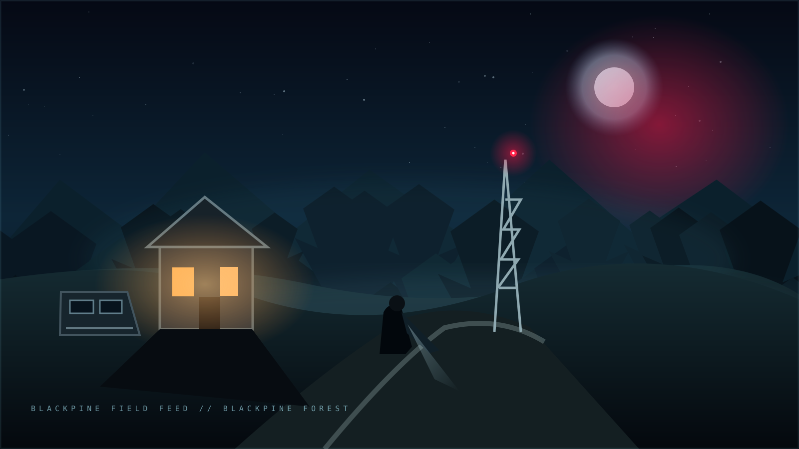

A CINEMATIC HORROR MYSTERY
THE LAST
SIGNAL
SOME SIGNALS SHOULD NEVER BE FOUND...
A missing research team. A cabin that should be empty. A radio tower repeating your name.
FIELD FILE09BLACKPINE
FOREST
FOREST
THE STORY SO FAR CHAPTER 01
You are Alex Mercer, an investigative journalist searching for a missing research team. Their last transmission was a voice repeating the same coordinates—then a second voice answered from a place that should not exist.
With a broken radio, an abandoned cabin and a tower pulsing through the storm, you have one night to uncover the truth before the signal finds you.
CURRENT OBJECTIVESearch the forest marker.Find a way into the cabin.
FIELD PROGRESS01 / 07 LOCATIONS
LOW SIGNAL

LOCATION 01 / 07
23:41 // FIELD FEEDBLACKPINE FOREST
The trees swallow the road behind you. A red light blinks on the signal marker.
FIELD OPERATION LIVESELECT AN ACTION TO INVESTIGATE
INTERACT / INVESTIGATE
TAP AN ACTION · KEYS 1–9